思维是灵魂的自语。
——柏拉图
如果你已经花工夫读了上面的引言（为什么有许多人从不读引言啊？），就知道我的数学藏书数目可观。我最喜欢的一种消遣就是拿有趣的问题来玩耍。嗯嗯，我当然会这么干。这就是我研究的方向嘛——让人不需要上过大学也可以享受数学之美。如果你有耐心戴一会思考帽，这里有成千上万个有趣的（一些很有名的）数学问题和悖论让你思考。几乎人人都可以稍做努力，就能解决最初看来相当复杂的问题。
在本部分，我简单给出一些我心爱的数学问题（从简单的到深奥的），毫无疑问地没有答案（如果你能解答，有一大笔奖金哟），关键是让你感受一下，你将要探索的数学世界多么五光十色。
宏大的小研究——一个开放问题
许多年前，我读到道格拉斯·霍夫施塔特获普利策奖的《哥德尔、艾舍尔、巴赫：集异璧之大成》。作者本人把这本书描绘成“刘易斯·卡罗尔意境下的关于思想和机械的隐喻赋格”。它涉及数学、音乐、对称理论、人工智能和逻辑王国的多个领域，还包含大量数学谜题。我来给你讲一个。
你心里想一个数，这里我是指整数。（阿喀琉斯，脚踵有缺陷的那位英雄，他也是霍夫施塔特书中的人物，想的是15。你当然也可以选你喜欢的数。）
现在进行如下操作：如果是偶数，就除以2；如果是奇数，就乘以3再加1。如此不断进行，直到得1（如果你真的得到了1）。我们看看这是怎么做的。
15是奇数，所以乘以3再加1。
15×3+1=46。
46是偶数，所以折半得23。这是奇数，所以乘以3再加1。
23×3+1=70
我们继续：
70/2=35
35×3+1=106
106/2=53
53×3+1=160
160/2=80
80/2=40
40/2=20
20/2=10
10/2=5
5×3+1=16
16/2=8
8/2=4
4/2=2，最终2/2=1，到达终点。
问题在于，是任何数最终都能到1吗？
你再试试其他数好不？由于数本身的不同，过程可能相当漫长，相当费纸。如果你用计算机来执行的话（预警一下），可能超时。
霍夫施塔特建议阿喀琉斯试试27。你也可以试试，给你几分钟……或者几小时。
放弃了吗？如果你从27开始，这过程看来无休无止，终点遥不可及。事实上，你需要的步数是111。
在他的书里，霍夫施塔特警告阿喀琉斯别想找到上述问题（所有数经过运算是否最终变到1）的答案，说这个就是所谓的“科拉茨猜想”。科拉茨猜想是数学界众多“开放问题”之一。开放问题就是指还没有人能解答的数学问题。科拉茨猜想说的是无论从哪个数开始，按上述要求计算，最终都得到1。猜想以德国数学家洛萨·科拉茨（1910-1990）命名，他在1937年提出这个猜想。尽管如此，这个猜想还有过其他名字，包括乌拉姆猜想（以波兰数学家斯塔尼斯拉夫·乌拉姆命名）和角谷猜想（以日本数学家角谷静夫命名）；有时也简称为3n+1猜想，恰如其分。
我最初看到3n+1猜想时，年幼无知，欣赏不来它的困难和深奥。我觉得用不了几天我就能指出什么样的数最终能变到1。事实上，我能证明这个猜想是对的，所有数最终都能变到1。关于这个，我甚至能找到每个数的步数（例如，对于15，要走17步）。我仅仅惊讶于以前怎么没人能做出来。
或者，我再想想……
大概这就是大家认为它是“开放问题”的缘故吧。
对这个结果，我即使没成功也没气馁。我又找到了好多很难的问题，它们引人深思。事实上，我更喜欢解之不得或者解之不易的问题，胜过不假思索瞬间挥就的。当然，也不是说我的乐趣就在于解不出题——披荆斩棘解出难题无疑更有乐趣。
不过，还是回到我们的猜想上来吧。看看我们遇到了什么：一个只用到加减乘除基本运算的数学题——但是世界上没有人解得出来！
这哪能啊？有人觉得简简单单提出的问题，解答也简简单单。哦，那可不是！简单的问题并非永远有简单的答案。数学里有不少问题童子能懂而智者难解。
对于科拉茨猜想，我们拿许多数验证之后，有个现象浮现出来，这个过程的最末几个数基本上一直是2的降幂。例如，从15开始，序列中最末的5个数是16，8，4，2，最后是1。
我们把这个现象描述为规则，我们可以提出：如果达到了2n，后续就是除以2，n次，一直到1。这暗示3n+1猜想有个变体：无论从什么数开始，都要跑到2的幂上去吗？
用另一个问题来替代给定问题的做法叫作约简，这是数学上一个有用的工具，而且无疑是解决数学问题更自然的办法。另一个类似的解题策略是“逆推”（从尾向头），你们要是玩迷宫的话就很熟悉了。在迷宫中寻路，有时从迷宫出口往入口找更有效。
匈牙利数学家保罗·厄多斯（1913-1996）乐于给解决了他感兴趣的数学开放问题的人提供奖金。奖金从25美元起，在他的名单上，科拉茨猜想值500美元——金额丰厚意味着它属于很“贵”的那类问题。即使厄多斯本人也说过，数学界对3n+1猜想——这么又难又绕的问题还无能为力。厄多斯已经过世了，但是别担心，他的同事罗恩·格雷厄姆接下了付款的任务。要是你解决了这个问题，会有两种方式拿到这笔钱：要么是厄多斯本人生前签名的支票（只能装裱起来看了，已经过付款日期了），要么是能取现的支票（你就在骄傲之罪与贪婪之罪间纠结一下吧）。
（另外提一个我挺喜欢的事实：在数学证明中，曾经用过的最大的数就是以这位罗恩·格雷厄姆命名的。那个数太大了，没法用常规的数学符号写下来。）
知之为知之，不知为不知，是知也。
——出自《论语·为政》
厄多斯数
保罗·厄多斯是个异常高产的数学家。（有本关于他的传记很棒，叫《一心爱数的人》，作者保罗·霍夫曼。）厄多斯写了1400多篇学术论文。他乐于合作，共有511位以上的数学家和他合作写论文。和厄多斯本人合作的数学家荣获“厄多斯1”的美称。跟“厄多斯1”合作过但没跟厄多斯本人合作过的，称为“厄多斯2”。“厄多斯3、4”等称号都是这样同理类推，规则是，如果你跟厄多斯数最少为k的人合作过，你的厄多斯数就是k+1。厄多斯本人就是独一无二的“厄多斯0”。沿着这个谱系到另一端，没跟厄多斯也没跟有限厄多斯数的人合作过的人，就称为“厄多斯无穷”（厄多斯∞）。“厄多斯无穷”听起来唬人——可能比“厄多斯7”还强，但是你们有不少人会惊讶地发现，你们（跟其他人一样）都顶着“厄多斯∞”的称号呢。至于我自己，没写过论文，但是曾经与一位“厄多斯3”数学家合作过一篇。因此，毫不自负地说，我骄傲我是“厄多斯4”。
这把我引到了一个流行的游戏，叫作“凯文·培根的六度空间”。凯文·培根，一位有名的好莱坞演员，曾经声称：在好莱坞，任意选择一个演员，要么是与他共事过（培根1），要么与他的同事共事过（培根2），或者与同事的共事者……（培根3、4）他声称，几乎好莱坞的所有男女演员的“培根数”都不超过6，例如猫王是“培根2”。我把他俩的连接关系留给你去找[1]。世界真是很小，因为竟有人既有厄多斯数又有培根数。例如罗恩·格雷厄姆就是“厄多斯1”和“培根2”。著名演员娜塔莉·波特曼是“厄多斯5”和“培根1”。（你是不是惊到了？）
现在我们回到解决科拉茨猜想上来。嗯，还没有解决。事实上我知道许多赚到500美元的办法，比傻乎乎围着科拉茨猜想打转容易多了。但是谁能说你该怎么做呢？
棋盘谜题
我深思熟虑过要不要讲以下谜题。它实在简单得很。尽管如此，我纠结了一会，还是决定讲了，因为它很有名，题目和解答都很吸引人。
我们看看8×8的格子。
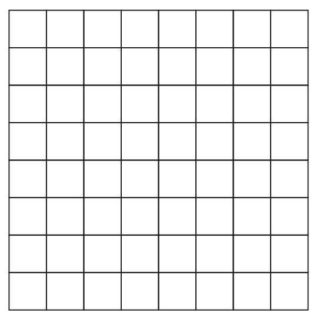
很显然，它可以被32块1×2的骨牌覆盖。现在我们把两个对角各移掉一个格子。
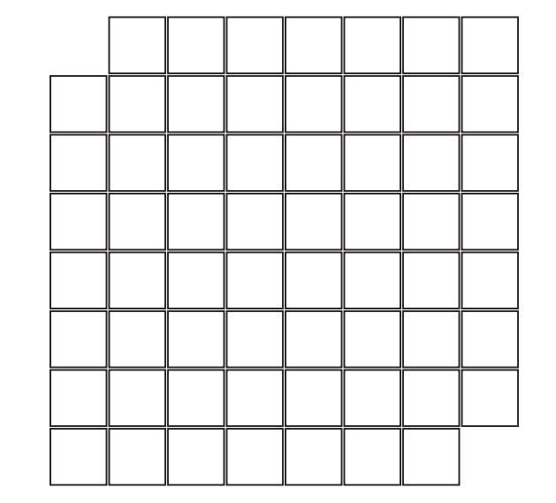
它还可以用31块骨牌覆盖吗？
我的多数朋友看到这道题（他们都不是数学家，但是大部分是聪明人）确信答案是“可以”——只需要想想怎么摆出来。
但正确答案是“不可以”。无论你怎么做，都不可能用31块骨牌覆盖缺失两角的网格。
如果我们把全白网格变成棋盘，原因立刻显现。
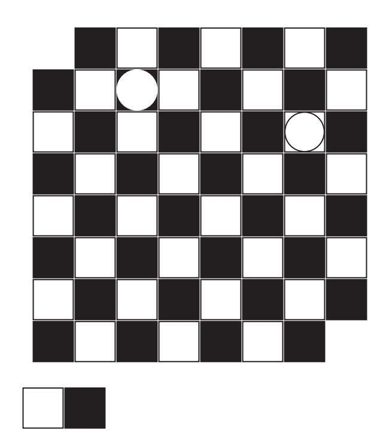
如你所见，每块骨牌可以覆盖一个黑格和一个白格；因此31块骨牌确切覆盖到的是31个白格和31个黑格。既然去掉的两格颜色相同——都是白的，我们的棋盘就剩下30个白格和32个黑格。因此，不可能用31块骨牌覆盖。
许多年前，我是特拉维夫-雅法大学数学系的学生，教一门“面向青少年的科学课”，叫作“悖论、谜题与数字”。我给选课的小小“学者”们出了上述谜题，结果发生了奇怪的事，许多学生拒绝接受缺角网格不能用31块骨牌覆盖的证明。有趣的是，这里面也包括对解释表面上完全理解的学生；尽管如此，他们坚持把骨牌摆来摆去，试图覆盖缺角的棋盘。我并没有尝试把他们从无望的工作中拉回来——一个人必须从自己的错误中学习。
历史告诉我们，人与国家在穷尽了其他所有选项之后才能走上正轨。
——阿巴·埃班
动动脑筋
证明：如果从棋盘中去掉任意两个不同颜色的格子，棋盘就一定能用31块骨牌覆盖。
无穷的井字格游戏
当我在出生之地——立陶宛的维尔纽斯上小学时，一大“成就”就是在课堂上玩写写画画的游戏技能高超，从未被老师捉到过。我最喜欢的是井字格游戏的无穷版。这个游戏帮我熬过了不得不上的无聊的课，而且不止一次。
我来解释一下游戏规则。
毫无疑问，你熟悉常规的3×3井字格游戏。这是一款适合6岁以下儿童的游戏。年纪再大点的孩子总会以平局结束战斗，除非一个玩家在游戏中途睡着了。（很有可能哟，这游戏实在是枯燥。）
在无穷版里，游戏是在无穷格子上玩的，目标是连成5个×或者5个〇。跟原版相似，可以横着、竖着或是斜着相连。玩家交替画×或〇，率先将5个连成一线的就算赢了。
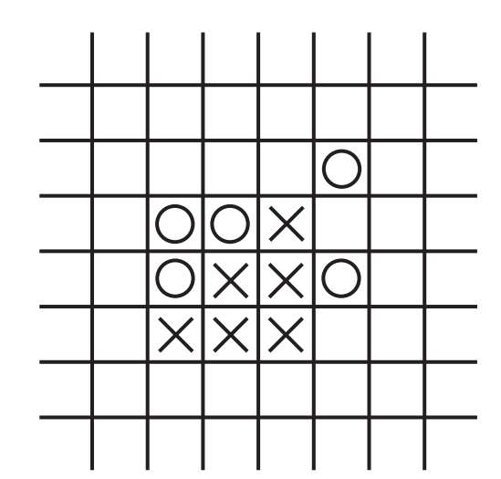
（a）
（a）〇玩家没法阻挡X玩家的双“活”3，就要输了
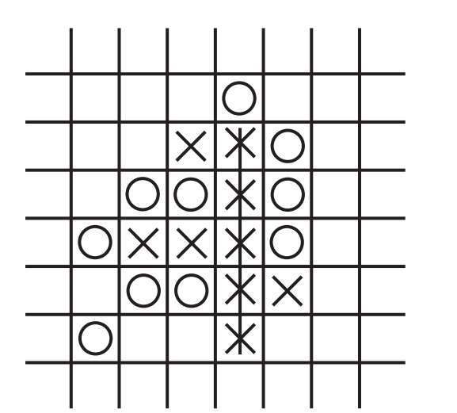
（b）
（b）在此示例中，X玩家赢了
当我在小学“发现”这个游戏时，我觉得它是我发明的，但是后来我发现不是，有个叫“五子棋”的游戏与无穷的井字格游戏很相似。
你可能听说过围棋这个游戏[2]。然而，尽管五子棋游戏经常跟有名的围棋在一模一样的棋盘上进行，两者之间却毫无联系。围棋是一种中国古代就有的游戏，甚至孔子在《论语》里也提及过。
我从上课时大玩特玩游戏中积累了不少经验，休息时间也积累一些。（休息时间允许玩，所以就不好玩了。）尽管如此，我也无法说出无论如何先手（×）是不是有必胜的策略；或者两人都用最佳策略，则为平局。（或者更确切地说，谁都没法终结游戏了。）直觉告诉我有些策略能让开局者必胜。
坦率地说，我必须承认这个游戏已经是我几十年前玩的了。不过我对必胜策略依然好奇。我甚至愿意打赌确确实实有什么必胜策略。等我老了闲了我就要去找找，但既然是很远的未来的事，也欢迎你先去试试看，我就不用费劲了。
僧人与谜题[3]——一段路程两头看
旭日初升，晨曦初露，山坡陡峭，山风呼啸，一位老僧开始向山顶的寺院攀登。老僧走的是唯一的道路，狭窄而崎岖，非常费力。他走走歇歇，吟诗诵经，吃粮饮水，到达山顶恰是日落时分。老僧在寺院授业几天，教年轻僧人怜悯、四谛、空性、自省、轮回、苦难、因缘、平静、八正道、禁欲。
授业已毕，老僧下山回乡。他从太阳升起时踏上来时路。当然下山要比上山快。到山脚下时，老僧觉得一天中一定有某个时刻，他上山和下山时经过了同一个点。
动动脑筋
老僧是怎样察觉的呢？如果你在10秒之内答不出来，就给你个明显的提示：
两僧相向而行，一上山，一下山，必然相遇。
网球中的数学——无穷是多少
版本1
1953年，英国数学家约翰·李特尔伍德（1885-1977）提出如下悖论，如今称为罗斯——李特尔伍德悖论。
无穷个网球在一个大空屋的入口排成一行，编号1，2，3，4，…。快到午夜了，现在是差30秒零点。将1号和2号球放进来，然后立刻把1号球弹出去。差15秒零点，将3号和4号球放进来，2号球出去。差7.5秒零点，5号和6号球进来，3号球出去，如此这般。（用“数学语言”来说，在差
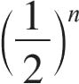
分钟零点，2n-1号和2n号球进来，n号球出去。）问题：零点时屋里有多少球？
研究这个问题的人给出的两个答案都有可能：无穷与无。这怎么可能？我们检查一下每个答案蕴含的逻辑。
无穷：最终有无穷个球是因为在这无穷回合里，每回合都进来一个球（二进一出）。数学家这么说的：对任意n，都能找到一个确切的时间，屋里有n+1个球。因此，零点有无穷个球。
无：零点时没有球是因为对每个球都可以给出它出去的确切时间。1号球出去的时间是差半分钟零点，2号球是差1/4分钟零点，如此这般。用更为数学的语言来说，n号球确切地在差1/2的n次幂分钟到零点时被弹出了屋。
做个民意调查，你投哪一方？
这里我们要认识到一件很重要的事，或许现在你很难理解，既然时间可以折半，午夜之前就有无数个时间点。
我会选第一个为“正确”答案，我小心翼翼地说一句，选第二个的人没有脱离有限思维的框架。他们想要知道“最终”哪个球留在屋里，这个想法与自然数“最终”是哪个数的想法别无二致：1，2，3，4，5，6，7，8，9，…，12367，12368，…。
我们都知道自然数集合中的元素是无穷的，没人能说出“最终”是哪个数，仅仅因为根本没有最终。
有趣的是，圣奥古斯丁（354-430）相信上帝看到且知道自然数的无穷性和所有属性，然后把它们转化为有限集合（当然，这是圣奥古斯丁的观点）。
还有两个罗斯-李特尔伍德悖论的变体。
版本2
我们又把编号为1，2，3，4，…的无穷个网球在一个大空屋的入口排成一行。差半分钟零点，1，2，3，4，5，6，7，8，9和10号球进来，1号球出去。差1/4分钟零点，11，12，13，14，15，16，17，18，19和20号球进来，2号球出去，如此这般。
当然问题还是一样：零点时屋里有多少球？
这里我们十进一出。也就是说，每回合净入9个球。因为重复无穷次，似乎这是绝对清清楚楚的事：零点时屋里有无穷个球。
动动脑筋
你能告诉我哪个球在屋里吗？我是说球的编号。
版本3
还是编号为1，2，3，4，…的无穷个网球在一个大空屋的入口排成一行。差半分钟零点，1号和2号球进来，2号球出去。差1/4分钟零点，3号和4号球进来，4号球出去。以此类推。问题还是一样：零点时屋里有多少球？
有没有感觉思路瞬间全部清晰了？
因为我们扔出了全部编号为偶数的球，在午夜，屋里是无穷个奇数号球。所以占据屋子的就是它们：1，3，5，7，9，11，13，15，…号球。
当然，奇数有无穷多个，它们全在屋里。偶数也构成了一个无穷大的集合，不过它们全在外面。
再动动脑筋
奇数集与偶数集比全体自然数集合要小吗？（自然数包括正整数和零。）
起初，你可能断定就是这样。因为对于奇数集来说，它只有自然数集（有奇有偶）的一半嘛。
但是，我们从这个角度看看：每个偶数都可以与自然数配对。
1 2 3 4…
2 4 6 8…
现在我们能欣赏到这个难以置信的说法之妙：尽管偶数集（与自然数集相比）跳一数取一数，两个集合的元素数量相同。我们说它们有相同的基。后文我们还会再讨论基这个概念。
这件事的本质引出一个更深奥的问题：无穷个数的集合真能互相比大小吗？“更大”“更小”“更多”“更少”这种词儿在讨论无穷时有意义吗？
请看后文！
无穷的概念既复杂又深奥，甚至有的时候令人难以置信。这里有必要提一提伽利略的格言：
研究无穷，难上加难，因为我们试图用有限的思想去讨论无穷，把有限中的属性安到上面；但是……大错特错，我们不能说某个无穷大于、小于或等于另一个无穷。
——伽利略·伽利雷
虽然我敬爱和欣赏伽利略，但我并不灰心。在本书后面的章节中，我们要对无穷做文章，尽管我们本身是可怜不幸又有限的生物。如帕斯卡所言：
人只是一根苇草，世间至弱，却是有思想的苇草。
——布莱士·帕斯卡
再玩一遍弹网球
如果（所有版本的）弹网球都没让你信服午夜时屋里有无穷多球，我要拿出大法宝，给出最后版本：假设这些球没有编号，全是普通的白球。
球不编号，而且都是那么多。
现在就清清楚楚了。如果每回合球数净增，那么零点时就有无穷个球。
现在我们可以回答这个问题：屋里有哪些球？
屋里有无穷个……白球！[4]
与之前的版本相比，最终版本视角独特，没有指出哪个特定的球弹出去了。当球被编上了号，我们就有制定规则的权利。但是现在，所有的球一模一样，我们不得不弹出一个随机球。
愚人节（闭门防骗的逻辑）
著名逻辑学家、数学家、魔术师雷蒙德·斯穆里安（1919-2017）讲过他初次遇到“逻辑”这个概念的情形。那是某年4月1日愚人节，那时雷蒙德还是个小男孩，前一晚，这位未来逻辑学家的哥哥说第二天要捉弄他一下，他认为雷蒙德无论如何都防备不了。
雷蒙德严阵以待，想方设法不让哥哥得逞。思考之后，小雷蒙德决定避免愚人节被捉弄的最佳办法是闭门蜗居一整天。
这个办法不是挺聪明的吗？
雷蒙德进了他的房间，关门独坐，寂寞难耐。时间一小时又一小时地过去了……直到午夜，他才骄傲地出来，吹嘘他没有上当，哥哥输了。哥哥回答：“你错啦！你上当了！你认为我捉弄你，其实我没有捉弄你，所以我还是捉弄了你！哈！”
雷蒙德·斯穆里安至死都没能确定哥哥是否真的捉弄了他。这件事你怎么看？
巧克力与毒药
这个游戏很简单，它也叫“大吃特吃”。（下图这个形状的巧克力板来自美国数学家大卫·盖尔。“大吃特吃”这个名字来自马丁·加德纳。）它在棋盘上以如下规则进行。
开局者在一个格子里标×。
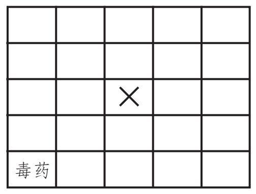
此后，以这个格子为起点向右向上（直到边缘）在格子上标×，直到全变成×。最初的×标为粗体。
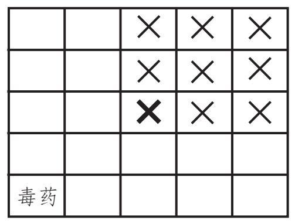
现在，另一玩家在剩下的某个空格子里标〇。此后，以这个格子为起点向右向上的格子里也全标上〇。最初的〇标为粗体。
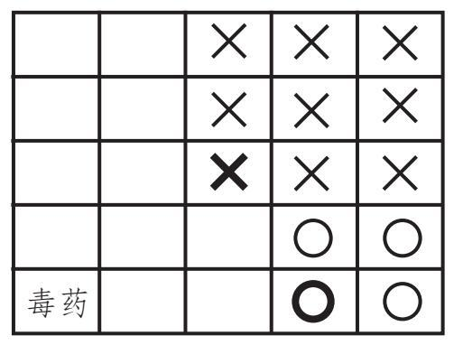
开局者再标1个×，另一玩家再标1个〇，直到迫使一方选择毒药——该方就死掉了（当然这是个比喻）。
警告：这个游戏会让人上瘾！
欢迎你试试在7×4（7行4列或行列反过来）的棋盘上玩玩。
如果是在行列数相等的棋盘上，有个策略可使开局者必胜，你能发现吗？花3分钟试试看。
答案
开局者必须选择毒药右上方的格子来标记：
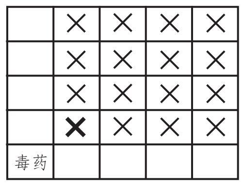
从这开始，开局者得与对手的每一步对称着来：
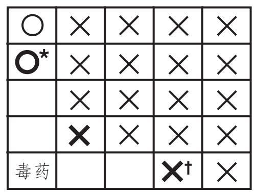
*对手的第一步标记
†开局者的回应
现在你就知道该怎么赢了吧？
在行列数不同的棋盘上，情况就更复杂了，但是我们能证明开局者有必胜的策略。可惜这个证明并没有提出什么特定的策略。数学家称这种证明为“非构造性的存在性证明”。
我们做个练习来结束这一讲：
当棋盘为2×N（2行，N列）的长方形时，找到开局者的必胜策略。
提示：为了形成对称局面，我们得使得棋盘上只剩毒药格子，或者毒药上方留一格，右方留一格。现在，解决这个问题（我希望如此）之后，对两行无穷列的情形你觉得如何呢？谁会赢？无穷之中，不拘常理！
[1]你可以在互联网上搜一下“猫王——凯文·培根”。猫王在《改变习惯》（1969）中与爱德华·阿斯纳合作。爱德华·阿斯纳在《JFK》（1991）中与凯文·培根合作，因此阿斯纳的培根数是1，猫王（从未与培根合演）的培根数是2。
[2]围棋是一种抽象的策略游戏，两人在棋盘上对弈，目标是围住更大面积，需要下棋之人通战术，懂战略，擅观察。五子棋（也叫五子连珠）也是一种抽象的策略游戏，传统上是用围棋子在15×15或19×19的围棋盘上对弈，先把5个棋子连成一条直线者获胜。用纸笔也能玩哦。
[3]我最早读到老僧登山的故事是在马丁·加德纳的《数学与逻辑谜题自选集》里，这本小册子超级有趣。
[4]很多数学家赞同，他们说我们讨论的是收敛的极限，这与怎样收敛相关。非数学家的读者可以在互联网上查一查“超任务”这个概念：在有限的时间里执行无穷多任务。稍后，我们将在芝诺的阿喀琉斯追乌龟的故事里见到它。